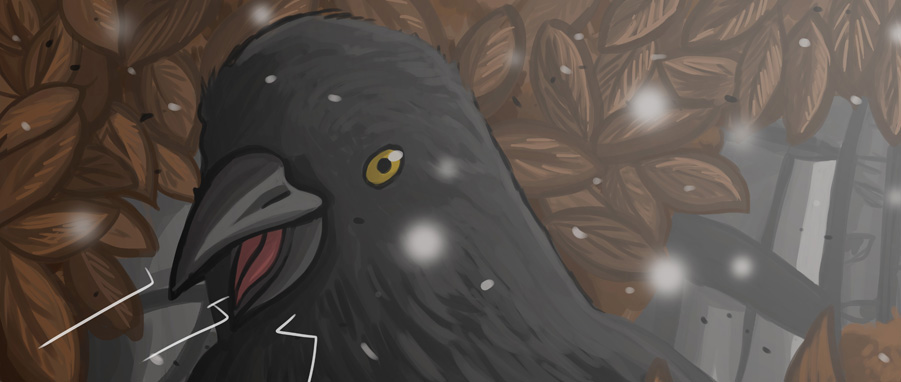

Voor mijn persoonlijke passieprojecten heb ik me toegewijd aan het creëren van twee graphic
novels.
Oorspronkelijk had ik de intentie om te werken aan een ander project dat meer interactie en gameplay zou bevatten dan deze twee,
maar ik besloot uiteindelijk om mij te concentreren op deze twee boeken.
De verhalen die ik schrijf spelen zich allemaal af in dezelfde wereld en zijn met elkaar verbonden,
waardoor ik kan spreken van een multiversum.
Het is een uitdagende taak om ervoor te zorgen dat alle verhalen met elkaar verweven zijn en naadloos op elkaar aansluiten,
maar het is ook een fascinerend proces dat me blijft inspireren.Hoewel ik me realiseer dat dit veel tijd en inspanning vergt,
heb ik mijzelf toegewijd aan het afmaken van deze twee graphic novels en krijg ik ze waarschijnlijk niet helemaal af.
Oorspronkelijk had ik de intentie om te werken aan een ander project dat meer interactie en gameplay zou bevatten dan deze twee,
maar ik besloot uiteindelijk om mij te concentreren op deze twee boeken.
De verhalen die ik schrijf spelen zich allemaal af in dezelfde wereld en zijn met elkaar verbonden,
waardoor ik kan spreken van een multiversum.
Het is een uitdagende taak om ervoor te zorgen dat alle verhalen met elkaar verweven zijn en naadloos op elkaar aansluiten,
maar het is ook een fascinerend proces dat me blijft inspireren.Hoewel ik me realiseer dat dit veel tijd en inspanning vergt,
heb ik mijzelf toegewijd aan het afmaken van deze twee graphic novels en krijg ik ze waarschijnlijk niet helemaal af.

END OF THE APOCALYPSE
"End of the Apocalypse" volgt een meisje terwijl ze door een post-apocalyptische wereld reist en haar visie op hoe de wereld eruit is komen te zien laat zien.

LOVE-LUST-HATE
Een gedicht over de meest krachtige emoties in de wereld.